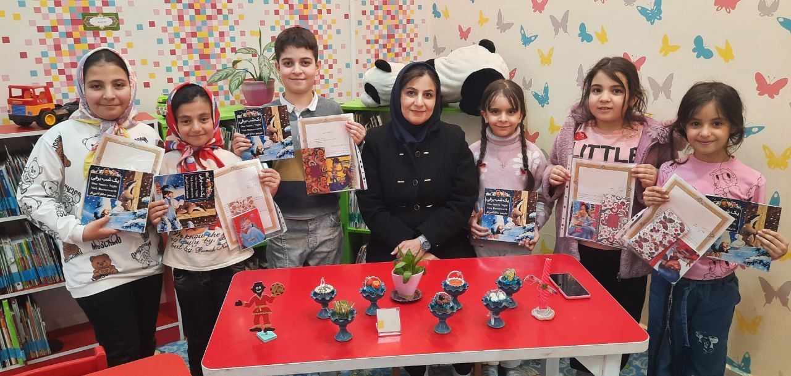
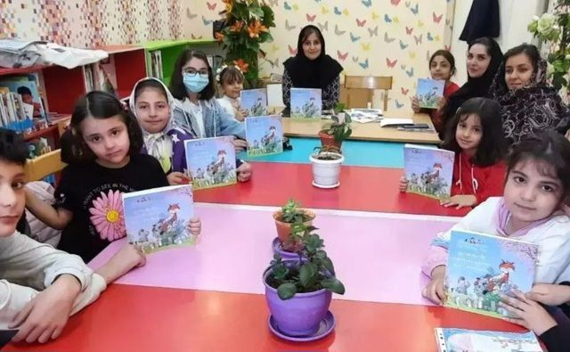
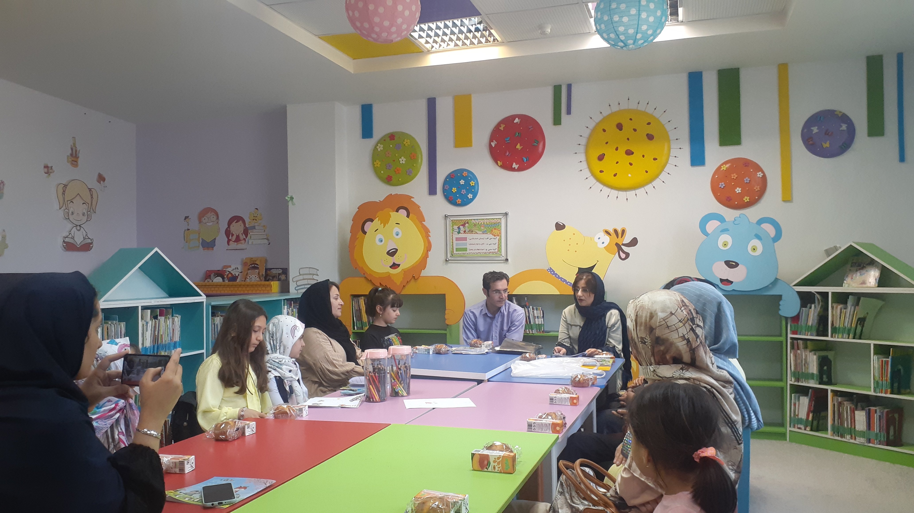
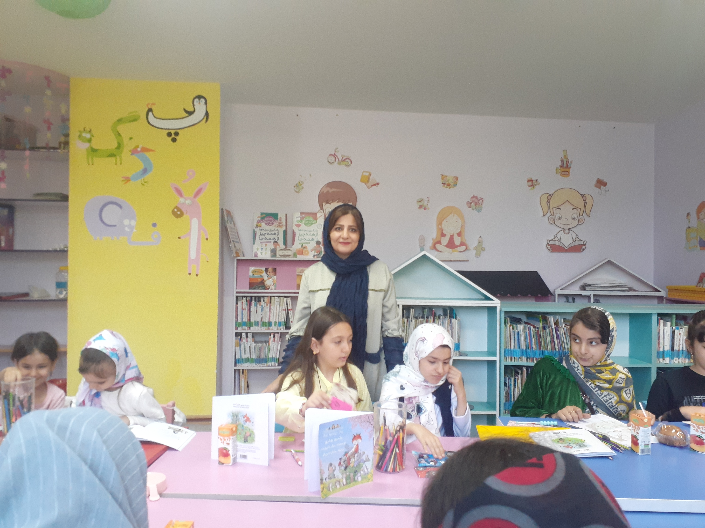
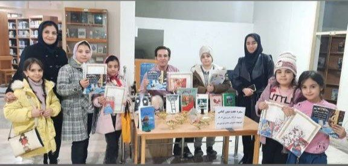
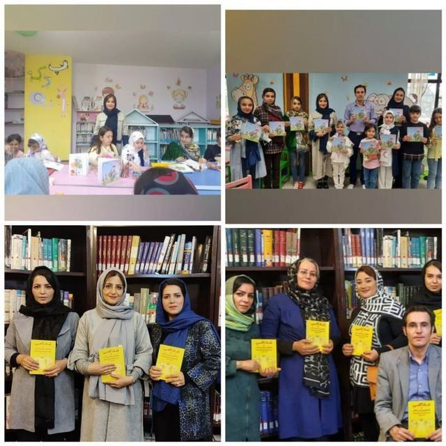

Translator & Book Translator
«Translation globalizes national literalure.»
Sanaz Azinfar is a translator, writer, and an active figure in the field of literature. With a thoughtful perspective and a strong interest in culture and books, she began her work in translating literary works.
Through translating works in the fields of children's literature, young adult literature, as well as books on ideas and inner peace, she has aimed to create a bridge between writers from around the world and Persian-speaking readers; providing fluent, faithful, and engaging translations for different audiences.
Among her translated works are books such as "Is There a Rainbow on the Moon?", "A Snowy Night", "A Spring Day", and "Don't Worry; 48 Lessons to Achieve Peace of Mind".
Sanaz Azinfar has translated several books so far and continues her efforts to introduce valuable literary works and cultural concepts to Persian-speaking communities.

By Dr. Ervin Brecher and Mike Gerard
Translator: Sanaz Azinfar
Publication Year: 2015
📌 ISBN: 978-600-344-220-7

By Marcus Aurelius
Translator: Sanaz Azinfar
Publication Year: 2020
📌 ISBN: 978-600-344-658-8

By Nick Butterworth
Translator: Sanaz Azinfar
Publication Year: 2020
📌 ISBN: 978-600-344-695-3

By Nick Butterworth
Translator: Sanaz Azinfar
Publication Year: 2021
📌 ISBN: 978-622-942-599-2

By Shunmyo Masuno
Translator: Sanaz Azinfar
Publication Year: 2023
📌 ISBN: 978-622-320-157-8
By Steve Laritson
Translator: Amirali Tavojoh
Editor: Sanaz Azinfar
Publication Year: 2017
Sanaz Azinfar's interview with ISNA News Agency about children's literature, translation, and the importance of choosing suitable books for children.
View the interview on ISNAIn an interview with Shabestan News Agency, Sanaz Azinfar highlighted the cultural potential of Ardabil Province and described its capacity to become one of the important centers for producing valuable children's and young adult books.
She also emphasized supporting local writers, illustrators, and publishers, as well as expanding cultural and literary activities.
View the interview on Shabestan





For communication, collaborations, and following her activities: